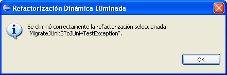

Eliminar RefactorizacionesEliminar Refactorizaciones
Eliminar RefactorizacionesEliminar RefactorizacionesEn esta sección aprenderá cómo eliminar una refactorización dinámica existente del conjunto de refactorizaciones disponibles.
Aparecerá una ventana con la lista de refactorizaciones disponbiles.

Borrar.
Se le pedirá confirmación antes de proceder a eliminar definitivamente la refactorización.
Cancelar si no desea eliminar la refactorización. En otro caso,
pulsar el botón OK resultará en la eliminación permanente de la refactorización.
Recuerde hacer una copia de seguridad del directorio de refactorizaciones dinámicas del plugin antes de eliminar o editar cualquiera de ellas, para poder restaurarlas manualmente después si lo desea. Si no, no podrá deshacer ninguna de estas operaciones.
